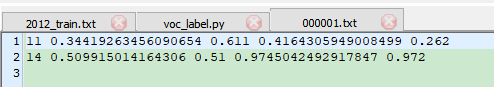

准备相应的数据集
voc和coco是目标检测中两种常用的数据集，目标检测框架也多用这两种数据集格式作为dataset 输入形式。准备好数据集是进行训练的的第一步，所以我们有必要了解一下这两种数据集格式
VOC
- Annotation文件夹存放的是xml文件，该文件是对图片的解释，每张图片都对于一个同名的xml文件。
- ImageSets文件夹存放的是txt文件，这些txt将数据集的图片分成了各种集合。如Main下的train.txt 中记录的是用于训练的图片集合
- JPEGImages文件夹存放的是数据集的原图片
- SegmentationClass以及SegmentationObject文件夹存放的都是图片，且都是图像分割结果图
YOLO
YOLO是目标检测中常用的框架，其标签信息如下:
-
转换前需要提供的文件
-
存放图片id的.txt文件,如train.txt test.txt val.txt
VOCdevkit/VOC%s/ImageSets/Main/%s.txt
-
每一个图片的xml标签 VOCdevkit/VOC%s/Annotations/%s.xml

-
-
转换后需要生成的文件
-
包含所有图片文件的绝对地址.txt文件
-
每张图对应的.txt标签文件 VOCdevkit/VOC%s/labels/%s.txt （注意：训练和测试图片的标签文件 txt 都存放在同一个 labels 文件夹下面） 
python label x1 y1 w h -
coco 格式：json文件
COCO数据集是一个大型的、丰富的物体检测，分割和字幕数据集。这个数据集以scene understanding为目标，主要从复杂的日常场景中截取，图像中的目标通过精确的segmentation进行位置的标定。图像包括91类目标，328,000影像和2,500,000个label。目前为止有语义分割的最大数据集，提供的类别有80 类，有超过33 万张图片，其中20 万张有标注，整个数据集中个体的数目超过150 万个。
{
"images":
[
{"file_name":"cat.jpg", "id":1, "height":1000, "width":1000},
{"file_name":"dog.jpg", "id":2, "height":1000, "width":1000},
...
]
"annotations":
[
{"image_id":1, "bbox":[100.00, 200.00, 10.00, 10.00], "category_id": 1}
{"image_id":2, "bbox":[150.00, 250.00, 20.00, 20.00], "category_id": 2}
...
]
"categories":
[
{"id":0, "name":"bg"}
{"id":1, "name":"cat"}
{"id":1, "name":"dog"}
...
]
}
"images"对应图片信息，每一项对应一张图片，包括图片名称 序号以及宽 高
"annotations"对应标注信息 ，"image_id"对应图片序号，"bbox"对应标注矩形框，顺序为[x, y, w, h]，分别为该矩形框的起始点x坐标，起始点y坐标，宽、高。"category_id"对应类别序号
"categories"对应类别信息 每一项对应一个类别，"id"对应类别序号，"name"对应类别名称
生成ImageSets里txt文件
import xml.etree.ElementTree as ET
from os import getcwd
sets = [('data', 'train'), ('data', 'val'), ('data', 'test')]
classes = ["jyz", "xcxj", "fzc", "nc", "jyz_gz", "fzc_gz"] #根据自己情况修改
def convert_annotation(year, image_id, list_file):
in_file = open('./Annotations/%s.xml' % (image_id),encoding='utf-8')#注意代码与xml文件路径
tree = ET.parse(in_file)
root = tree.getroot()
for obj in root.iter('object'):
difficult = 0
if obj.find('difficult') != None:
difficult = obj.find('difficult').text
cls = obj.find('name').text
if cls not in classes or int(difficult) == 1:
continue
cls_id = classes.index(cls)
xmlbox = obj.find('bndbox')
b = (int(xmlbox.find('xmin').text), int(xmlbox.find('ymin').text), int(xmlbox.find('xmax').text),
int(xmlbox.find('ymax').text))
list_file.write(" " + ",".join([str(a) for a in b]) + ',' + str(cls_id))
wd = getcwd()
for year, image_set in sets:
image_ids = open('./ImageSets\%s.txt' % (image_set)).read().strip().split()#注意路径
list_file = open('%s_%s.txt' % (year, image_set), 'w')
for image_id in image_ids:
list_file.write('%s\JPEGImages\%s.jpg' % (wd, image_id))
convert_annotation(year, image_id, list_file)
list_file.write('\n')
list_file.close()